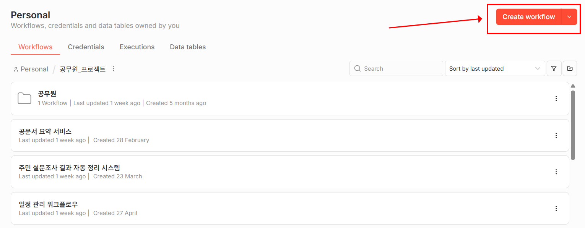
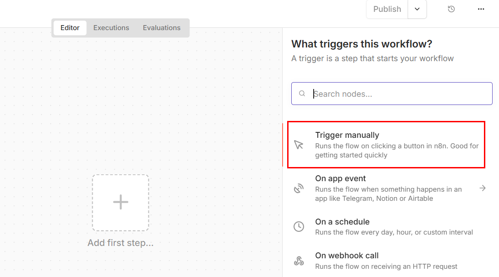
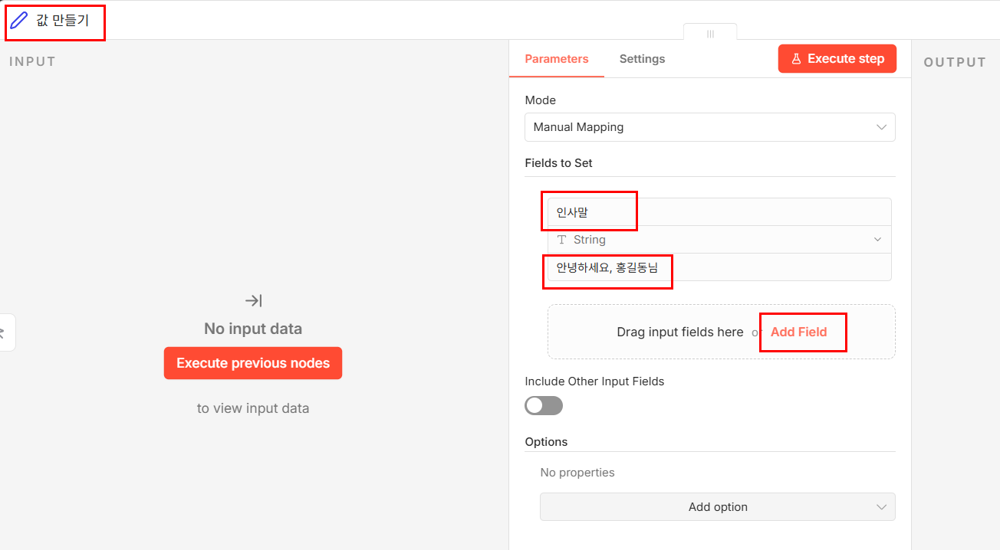

새 워크플로우 만들기
오른쪽 위 Create workflow 클릭
왼쪽 메뉴 Personal(Overview) → 목록 화면
[그림 1-2] Create workflow 버튼 위치

트리거 추가하고 이름 바꾸기Add first step… → Trigger manually 선택, 이어서 제목 더블클릭 → 수동 실행으로 변경
목록 순서: Trigger manually → On app event → On a schedule → On webhook call. 앞으로 이 노드는 항상 "수동 실행"
[그림 1-3] 맨 위 Trigger manually

Set 노드 붙이기
노드 오른쪽 + → Edit Fields (Set) 선택
필드 추가하기Fields to Set에 빈 줄 없으면 Add Field 클릭
값 채우고 노드 이름 바꾸기name = 인사말 / value = 안녕하세요, 홍길동님자료형 String 유지, Include Other Input Fields 끔
[그림 1-4] 이름·값 입력 완료

INPUT "No input data" + 빨간 Execute previous nodes = 정상(미실행 상태)Options "No properties" = 정상(추가 설정 없음)
마지막으로 이 노드의 제목을 더블클릭해 값 만들기로 바꿉니다.
노드 이름 = 설명서
실행하고 확인하기
Execute workflow 클릭 → 노드마다 초록 체크
값 만들기 클릭 → 인사말: 안녕하세요, 홍길동님 확인 = 성공
안 될 때
실행 버튼이 없음 — 트리거 노드 없음 → 2단계 확인
노드가 안 이어짐 — 오른쪽 동그라미를 다음 노드 왼쪽으로 드래그
필드 입력 칸이 없음 — Add Field로 빈 줄 생성
값이 비어 보임 — name/value 칸 순서 확인(위: 이름, 아래: 값)
확인 문제
객관식Q1. n8n에서 모든 자동화를 이루는 두 가지 기본 조각은?
변수와 함수
트리거와 노드
시트와 메일
서버와 클라이언트
정답 확인
정답: ② 트리거(언제 시작할지)와 노드(무엇을 할지)의 조합이 모든 자동화의 기본 단위입니다.
객관식Q2. 값 만들기 노드에서 이름 칸과 값 칸에 알맞은 자료형·설정은?
자료형을 Number로 바꾸고 Include Other Input Fields를 켠다
자료형은 String 그대로 두고 Include Other Input Fields는 끈다
자료형을 Boolean으로 바꾸고 이름 칸은 비워둔다
값 칸을 표현식 모드로 강제 전환해야 한다
정답 확인
정답: ② 이번 강의에서는 자료형을 String 그대로 두고, Include Other Input Fields 스위치도 꺼진 채로 둡니다.
단답형Q3. 실행 버튼을 눌렀을 때 값 만들기 노드가 만들어야 하는 필드 이름과 값은 각각 무엇인가요?
정답 확인
정답: 이름 = 인사말, 값 = 안녕하세요, 홍길동님
더 해보기 (선택)
일찍 끝난 분을 위한 선택 과제입니다. 안 해도 다음 강을 따라가는 데 지장이 없습니다. 워크플로우를 망치고 싶지 않다면 먼저 워크플로우를 복제(Duplicate)해서 복사본에서 실험하세요.
값 만들기에 필드를 하나 더 만들어 보세요 — name = 담당자, value = 본인 이름
실행한 뒤 OUTPUT에 두 줄이 나오는지 확인합니다. 한 노드가 값을 여러 개 만들 수 있다는 것을 확인하는 과제입니다